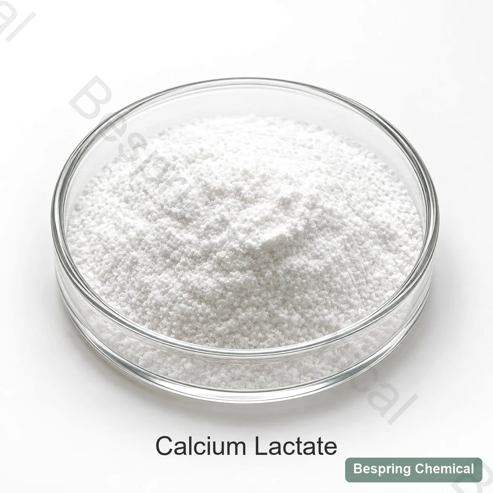
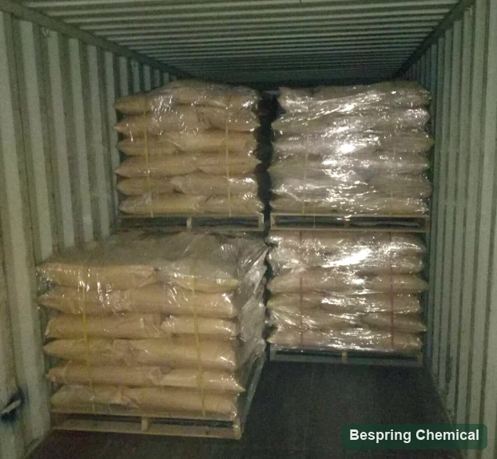

Lock the hydration state
Request the stated form and loss-on-drying method. “Calcium lactate” alone is not enough for an equal-cost comparison.
Calcium salt · Firming agent · E327 / INS 327
Food grade calcium lactate (E327 / INS 327) is a calcium salt of lactic acid used as a calcium source and firming ingredient in permitted foods. Bespring supplies ingredients for international B2B buyers. Confirm the offered hydrate form, food standard and assay basis before comparing calcium content, price or formulation requirements.
State the hydrate form, application, target calcium contribution, quantity and destination market.

Product identity
Calcium lactate is the calcium salt of lactic acid, identified as E327 in the EU and INS 327 by Codex. The identity covers anhydrous and hydrated material: C6H10CaO6·xH2O, where x = 0–5. The JECFA calcium lactate monograph describes crystalline powder or granules, soluble in water and practically insoluble in ethanol. Confirm the actual form and identity on the offered-grade specification and SDS; the general CAS entry does not establish a particular hydrate or stereochemical grade.
JECFA lists buffer, dough conditioner and yeast-food functions. U.S. 21 CFR 184.1207 also recognizes uses including firming and nutrient supplementation under its conditions. A food function does not establish the performance or market permission of an individual grade.
The comparison buyers often miss
JECFA describes C6H10CaO6·xH2O, with x from 0 to 5. Water of crystallization changes formula weight and the calcium fraction of the supplied material. Compare the declared hydrate, water test and assay basis together. The anhydrous formula weight is 218.22 g/mol; the calculated pentahydrate value is approximately 308.30 g/mol.
Request the stated form and loss-on-drying method. “Calcium lactate” alone is not enough for an equal-cost comparison.
Separate “as supplied,” “dried basis” and “anhydrous basis.” Dry-basis assay does not reveal how much crystallization water is shipped.
Pure anhydrous calcium lactate contains about 18.37% theoretical calcium; pure pentahydrate about 13.00%. These calculated mass fractions are not commercial specifications or batch results. Use the offered grade's measured or explicitly agreed calcium data.
Compare landed cost per kilogram of compliant product and, for fortification, per kilogram of delivered elemental calcium.
Function-led selection
Use the application to define the grade and test plan. Regulatory permission, use level and labelling must be checked for the finished food and destination market.
Calculate target elemental calcium and verify dissolution, clarity, sediment, flavour, pH, shelf stability and analytical recovery.
Screen calcium uptake against firmness, cut-surface integrity, colour, drip, flavour and process yield.
Control calcium availability, addition order and contact time to avoid premature skin formation, uneven gelation or local precipitation.
JECFA lists dough-conditioning and yeast-food functions. Assess handling, fermentation, crumb and flavour in the actual recipe. This does not establish calcium lactate as a direct replacement for an acid-phosphate leavening ingredient.
Formulation risk control
Calcium lactate may dissolve, yet free calcium can react with other ingredients. Test the finished matrix at manufacturing concentration and over shelf life.
Calcium and phosphate can reduce clarity or form deposits depending on species, pH, concentration and addition order.
Acid type and pH influence calcium speciation, taste and stability. Confirm the complete acid system.
In carbonate-containing recipes, assess possible calcium-carbonate precipitation, pH and processing conditions. Review bicarbonate together with the complete acid system; calcium lactate alone does not establish a gas-release or leavening profile.
Calcium can cross-link alginate; other hydrocolloids respond differently. Confirm polymer type, calcium availability, dispersion and addition sequence. See the sodium alginate calcium-gel selection guide for formulation considerations.
Specification architecture
Request the current specification for the offered food grade. Use the checklist below to agree limits and complete test methods, then compare a representative COA and the shipment batch COA. The checklist is not a set of guaranteed numerical limits.
On small screens, swipe the table; keyboard users can focus it and use the arrow keys.
| Control | What to request | Why it matters |
|---|---|---|
| Identity & form | Name, CAS, E/INS number, hydration state | Prevents hydrated and anhydrous material being treated as equal |
| Assay | Limit, method and reporting basis | Enables a valid dose and price comparison |
| Water / loss on drying | Limit, temperature and time | Supports hydrate and delivered-solids checks |
| Elemental calcium | Controlled range or calculation basis | Supports nutrition and cost normalization |
| Solution properties | pH, solubility/clarity and test concentration | Methods and matrix conditions affect meaning |
| Purity controls | Acidity, fluoride, lead and required contaminants | Standards and customer requirements differ |
| Physical properties | Particle size, density and caking criteria | Affects feeding, dispersion and blend uniformity |
| Documents | COA, TDS, SDS, origin/allergen and certificates | Qualifies the actual source and lot |
The agreed source-specific specification sets acceptance limits; a COA reports results for a particular batch. Public standards provide comparison criteria and do not establish conformity of a Bespring offer. Check certificate entity, product, site and validity for the exact supply.
*Standards comparison: the existing EU reference is ≥98% on anhydrous basis. JECFA specifies ≥98.0% on dried basis, with an EDTA assay on previously dried sample; loss on drying is ≤30% at 120°C for 4 h, pH 6.0–8.0 in a 1-in-20 solution, fluoride ≤30 mg/kg and lead ≤2 mg/kg. These are public criteria, not Bespring guarantees. Confirm the agreed standard, sample preparation and reporting basis. A “heavy metals as Pb” total does not establish a separate lead result. Read the JECFA methods and limits.
Authoritative references
Identifies calcium lactate as CAS 814-80-2 and INS 327 under Monograph 1 (2006).
Open JECFA recordLists functional classes and category-specific provisions—not permission in every food.
Open GSFA record21 CFR 184.1207 requires the incorporated FCC specification and GMP conditions. Its conditions exclude infant foods and infant formulas.
Open FDA recordThe linked 2023 consolidated text is a historical E327 purity reference. Review subsequent amendments and current destination-market use conditions before approval.
Open EU criteriaContent updated 5 October 2026. JECFA and U.S. eCFR were checked for this update. Confirm current EU criteria and Codex provisions for the intended food and destination.
Alternative calcium sources
Compare calcium density, dispersion, acid system, sensory profile and clarity.
View calcium citratePrimarily evaluate acid-phosphate and leavening behavior; it is not a like-for-like replacement.
View MCPDesign the intended gelation rate and texture when combining it with a calcium source.
View sodium alginateAssess calcium compatibility when phosphate functionality is part of the system.
View phosphate blendsStorage & handling
Historical logistics reference

Buyer questions
Not necessarily. Calcium lactate includes anhydrous and hydrated forms. Pentahydrate contains five waters of crystallization per formula unit. Confirm the offered hydrate, exact identity and assay/water methods; this page does not guarantee availability of every form.
Pure anhydrous calcium lactate contains about 18.37% theoretical calcium by mass, compared with about 13.00% for pure pentahydrate. These calculated values are not batch results. Use an as-supplied calcium value for formulation; do not apply assay again if the declared value already includes that correction.
JECFA describes calcium lactate as soluble in water. Dissolution time and finished-food clarity also depend on form, particle size, temperature, concentration, pH and other ingredients. Agree test conditions and run trials through processing and storage.
Calcium ions can cross-link alginate. Match calcium concentration and delivery to alginate type, hydration, addition order and contact time. Trials are needed to establish set time, texture and stability; another calcium salt is not automatically an equal-dose replacement.
No. E327 or INS 327 identifies the additive; market and food-category conditions still apply. In the United States, 21 CFR 184.1207 specifies FCC and GMP conditions and excludes infant foods and infant formulas from those conditions. Check the intended finished food and destination.
No. The public assay reference is a standard criterion, and the checklist identifies information to request. Agree the offered-grade specification, including test methods and reporting bases. A batch COA supplies results for a specific lot; it does not replace the specification or market-use assessment.
Provide hydrate form and exact food identity, required standard, application/process, calcium target, critical purity and physical tests, quantity, packaging, destination, Incoterm and delivery requirements. Request the offered-grade specification, TDS, SDS, representative and batch COA, plus any required declarations and certificates; confirm their availability and scope.
Hydrate-aware sourcing
Provide the intended food, destination standard and hydrate preference so we can review the offered grade, documentation and commercial terms. Request confirmation of packaging, quantity, Incoterm and delivery timing.